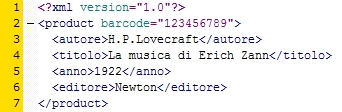

Torna alla pagina di Tecnologie Web
:: Tecnologie Web ::
Concetti Generali
XML (eXstensible Markup Language) è uno standard supportato dal W3C per il markup dei documenti, che definisce una sintassi generica utilizzata per contrassegnare (mark up) i dati utilizzando tag semplici e leggibili. Altra definizione: XML è uno strumento per trasmettere informazioni, indipendente dalla
piattaforma, dal software e dall’hardware.
Un documento XML è formato da semplice testo e da un insieme di tag (ad esempio: <persona>, <autore>, <gnocca>) e quindi assomiglia ad un documento HTML, ma tra i due ci sono delle differenze:
XML è flessibile per quanto riguarda gli elementi, ma è molto preciso e rigoroso per quanto riguarda la grammatica dei documenti, cioè il posizionamento dei tag e il modo in cui vengono scritti.
La rigidità della grammatica permette ai parser XML(programma che definisce se un documento è ben formato) di poter leggere e comprendere qualsiasi documento XML. I documenti che soddisfano le regole della grammatica (o sintassi, che dir si voglia) e sono ritenuti validi si chiamano documenti ben formati. Per verificare che un documento XML sia valido si possono utilizzare vari metodi: aprirlo con un browser e verificare la presenza di errori; utilizzare un validatore del W3C; utilizzare l'opzione validate in un editor XML.
Un'applicazione XML è un'applicazione della sintassi XML a un particolare dominio, è cioè un insieme di tag che vengono scelti e utilizzati da più individui o organizzazioni per aumentare l'interoperatività, che viene raggiunta utilizzando appunto solo i tag scelti.
Il markup di un documento XML definisce la struttura del documento stesso e la sua semantica, permettendo di distinguere quali elementi siano associati ad altri elementi. Inoltre, come abbiamo già visto, il markup non ci deve dare nessuna informazione riguardo alla visualizzazione grafica del documento.
In un'applicazione XML si possono utilizzare vari tipi di markup (cioè vari insiemi di tag) e questi possono essere documentati in un DTD Document Type Definition. Il DTD infatti elenca i markup considerati legali e specifica il modo in cui questi possono essere inclusi in un documento. Un documento può contenere il DTD vero e proprio oppure un puntatore all'URI sul quale è possibile trovare il DTD.
Un documento XML per essere valido deve essere quindi conforme allo schema DTD o XML Schema.
Con la portabilità dei dati intendiamo ottenere dei documenti indipendenti dall'applicazione, favorendo la riusabilità, la flessibilità e l'apertura ad applicazioni complesse.
XML permette di creare formati di dati indipendenti dalla piattaforma e durevoli nel tempo, questo grazie al fatto che:
Riassumendo quindi la portabilità ci permette di:
Esempio di documento XML:

Il markup dei dati avviene utilizzando tag e attributi che descrivono l'autore, il titolo, l'anno e l'editore. Contiene testo standard che può essere salvato in un file di testo e quindi modificato con un editor di testo senza ricorrere ad un editor XML.
Invece, i programmi che devono comprendere il contenuto di un documento XML non devono trattarlo come un file di testo, ma utilizzare un parser XML per leggerlo e interpretarlo e quindi verificare che sia valido.
Il parser è responsabile della suddivisione del documento in singoli elementi, attributi e altre entità, e di passare il contenuto del documento XML così interpretato all'applicazione, elemento per elemento.
Se il parser durante l'interpretazione del documento incontra una violazione delle regole della sintassi XML, informa l'applicazione dell'errore riscontrato. Attenzione che il parser si limita a informare l'applicazione della presenza dell'errore, non corregge nulla.
Qualche definizione:
SGML(Standard Generalized Markup Language) è un linguaggio di markup strutturato, dotato di semantica per documenti di tipo testuale che è diventato standard ISO nel 1986.
Perché facciamo qualche accenno a questo linguaggio?
Il problema di SGML è la sua complessità, infatti le specifiche ufficiali sono formate da più di 150 pagine di contenuti tecnici, che trattano scenari poco realistici.
Un documento definito sulla base di SGML deve essere composto dalle seguenti tre parti:
<!SGML "ISO 8879:1986" ...>
Permette di specificare valori fondamentali come la lunghezza dei nomi degli elementi, il set di caratteri usati, ...
Come la dichiarazione XML non è obbligatoria e se assente viene usata una dichiarazione di default.
<!DOCTYPE nome TIPO [markup]>
La dichiarazione del tipo del documento serve a specificare le regole che permettono di verificare la correttezza strutturale di un documento. In poche parole vengono definiti gli elementi ammissibili.
L'istanza del documento è quella parte del documento che contiene il testo vero e proprio, dotato del markup appropriato (cioè che rispetta il DTD definito).
Quindi all'interno dell'istanza avremo: tag, attributi, entità, PCDATA, commenti, ...
Come per XML le applicazioni SGML sono in grado di controllare che il contenuto dell'istanza rispetti le regole definite nel DTD ed in caso di violazione segnalarlo all'applicazione.